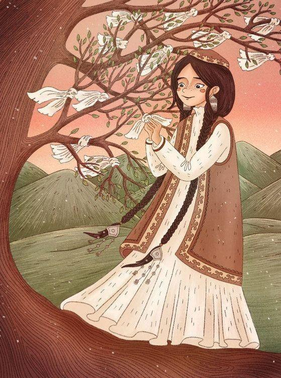

We serve the best authentic traditional and modern Kazakh cuisine in Ottawa. And we've got the the most delicious horse meat in the country.

tabıǵatpen shabyttan
eń bastysy - júrektiń jylylyǵy

adam kórki – aqyl
Our year-round patio is the number one in the city. Our ambiance is unparalleled, our service goes above and beyond; Dastarhan is an experience, not just a meal out.
The most popular dish among Kazakhs is beshbarmak. This is the main dish of the national cuisine. Beshbarmak translated from kazakh means "five fingers" because of the manner of eating this dish with your hands.
In the Kazakh national cuisine, as in a mirror, the soul of the people, its history, customs and traditions are reflected.
Since hospitality has long been a distinctive feature of the Kazakh people, guests in the house are always given a proper welcome and a place of honor.
Today, representatives of many peoples living in Kazakhstan gather for one dastarhan. For centuries, these peoples lived peacefully next to the Kazakhs and influenced their daily life and culture and, of course, cuisine.
- 7 Springfield Rd, Ottawa
 +7(701)-111-22-11
+7(701)-111-22-11 12:00 PM - 10:00 PM
12:00 PM - 10:00 PM